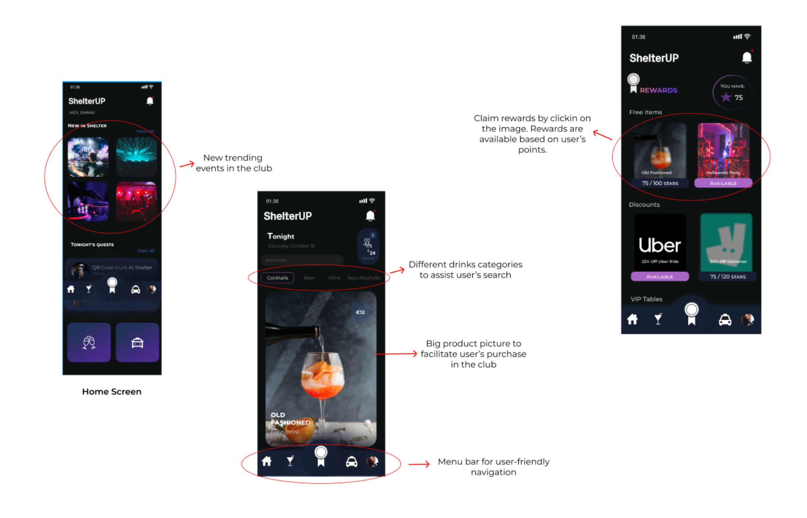

ShelterUP
A new and innovative way of experiencing nightclubs

UX/UI Designer & Front-End Developer
Duration:
September 2021 - January 2022
Context
In a dynamic collaboration between Team Liquid, a leading esports
organization, and Fontys University of Applied Sciences, a unique
challenge was presented to second-year students.
The mission?
To conceptualize and develop a cutting-edge loyalty program product,
inspired by the success of Team Liquid's own offering, Liquid+. This
presented an exciting opportunity to dive into the intricacies of a
real-world business and devise a customized loyalty program tailored
to enhance customer engagement and satisfaction.
What's the problem?
In the realm of nightlife, a persistent challenge shadows the vibrant atmosphere of clubs and social gatherings. Whether accompanied by friends, family, or partners, people frequently encounter the exhausting process of ordering beverages. Long queues become a bottleneck, demanding time and energy that could be better spent enjoying the vibrant atmosphere.The struggle as the necessity to keep an eye on companions in the crowd adds an additional layer of stress. The fear of losing sight of friends or loved ones diminishes the overall enjoyment of the night out. As the night concludes, a new set of concerns emerges. The safety of the journey home becomes a paramount consideration. Navigating transportation options and ensuring a secure return often lingers in the minds of patrons, disrupting the seamless transition from a night of celebration to the comfort of home.
Work process
Research Question:
“How can the integration of a loyalty program assist nightclub lovers in enhancing their overall night out experience?”
Approach used
The journey to revolutionize the nightlife experience unfolded through
a careful and innovative application of the
Design Thinking approach.
Rooted in empathy, creativity, and user-centricity, this methodology
guided every step of our process. By embracing the principles of the
chosem approach, our work process ensured a holistic, user-focused
approach that aligned with the dynamic and complex nature of the
nightlife environment. This methodology empowered us to not only
address the identified challenges but to innovate and elevate the
overall club experience
Talking with people...
To understand the intricacies of the nightlife experience, we conducted a comprehensive empathize phase using a dual-method approach: qualitative (interviews) and quantitative research(survey). My involvement in this stage was mainly in crafting survey questions, conducting interviews, and analyzing both quantitative and qualitative data. This hands-on involvement ensured a thorough understanding of the user experience.
What did people say?
I wanted to comprehend the key elements of a succesful/great nightclub experience and how it compares to a terrible one. What are some of the challenges people face? What is their overall behaviour at nightclubs? How long do they wait at the bar to get a drink?
-Quote from a user interview: “Although I don't go to nightclubs that often, I would be very relieved if there was a safer way to get back home.”
And now?
From the preliminary studies, we understood that the main problems
people encounter when going out to a nightclube included:
- Long waiting time at the bar
- Lack of transportation back home
Based on the aspects above as well as the client task of creating a loyalty program, ShelterUp came to life. A loyalty program designed to take anyone's clubbing experience to the next level, enhancing an appealing reward system and facilitating challenges people encounter at nightclubs.
To conclude...
This designed loyalty program app is not just a product; it's a result
of extensive research that identified pain points of beverage
ordering, social cohesion, and safety concerns.
By streamlining processes and fostering a user-centric approach, it
brough a new concept to the table. While I am extremely happy with the
results, I must say that the end-product can still benefit from
improvements, mainly on aspects regarding the rewards offering and
transportation options in the application.
▲